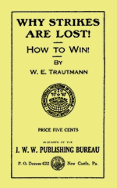

Why Strikes are Lost & How to Win
By W. E. Trautmann - IWW, 1912. Scanned & transcribed by Jim Crutchfield. Obvious typographical errors silently corrected, but much of Trautmann's ideosyncratic spelling and punctuation is left unchanged.
After a tremendous epidemic of strikes a few years ago, conflicts expressive of a general discontent finding its outlet; in vehement eruptions, but ending only with a pitiful exhaustion of vitality, there seems to be at present a relapse all around. "The workers have gone to sleep," thus thinks the superficial observer and the uninformed outside world.
This seems, indeed, to be the truth. However, a relapse in numerical strength would amount to little: economic depression could be attributed as the cause.
But deplorable would it be if there were in reality a relapse in the aggressive attitude, in the revolutionary feelings of the workers.
This spirit of revolt manifesting itself a few years ago in somewhat rough actions and expressions seemed to mark the beginning of a general awakening of large masses of workers; and yet there seems to be nothing left of the spontaneous, widespread tendency of revolt.
For this there must be reasons. Such powerfully exploding forces cannot be destroyed altogether, or be dammed in by repressive measures.
Time flies quickly; here and there one hears again of rapid flaring up, of a volcanic eruption of accumulated discontent, but in most of the cases it is only a last flicker of a light before it goes out altogether.
If occasionally larger bodies of workers become involved in these demonstrations of revolt, politicians and labor (mis)leaders are quickly on hand to suggest termination of the conflict, with the promise of speedy arbitration. These leaders of labor often even threaten to engage union strikebreakers if the workers refuse to obey their mandates. In some cases the places of striking. workers have been filled by other members of these so-called unions so as to suppress any rebellion against the leaders and the capitalist class whom they serve. But seldom is anything more heard of the results of such conciliatory tactics, or of any determined stand on the part of the workers to enforce the terms of such settlements. Their power once crushed after having been exercised with the most effective precision, also destroys their confidence; and the organization through which they were able to rally the forces of their fellow workers for concerted action disappears.
After an apparent awakening of three or four years' duration (1901 to 1905), during which some of the largest conflicts were fought on American soil, a general indifference superseded the previous activity. A lethargy prevails now, even to the extent that many workers with eyes still shut are marching into the pitfalls laid for them. Blindfolded by false theories they are being prevented from coming together into organization in which the workers would be able to profit from the lessons of the past, and prepare for the conflicts with the capitalist class with better knowledge of facts and more thoroughly equipped to give them better battle.
In the period mentioned the general clamor for an advance in wages, and the shortening of the workday, had to find its expression. Prices of the necessities of life had been soaring up, as a rule, before the workers instinctively felt that they, too, had to make efforts to overcome the increased poverty attendant upon increased prices for life's necessities. Powerless as individuals, as they well knew, they were inclined to come together for more collective and concerted action. With great displays and much oratory the beauties and the achievements of such action on craft union lines, as exemplified by the American Federation of Labor and the eight independent national Brotherhoods of Railway Workers, were presented to them.
Not knowing better, seeing before their eyes immediate improvement of their conditions, or at least a chance to advance the price of their labor power in proportion to the increased cost of living, the workers flocked into the trades unions in large numbers. At the same time the relative scarcity of available workers in the open market, at a period of relative good times, forced the employers of labor to forestall any effort to cripple production. Consequently, in the epidemic of strikes fol lowing one another, the workers gained concessions. Such concessions, however, were as much the combined result of a decreased supply of labor to an increasing demand, as to the spontaneously developed onrush into the trade unions.
One thing, also, contributed largely to the success of these quickly developed strikes. The workers would come together shortly before walking out of the shops. In the primary stage of organization thus formed they knew nothing of craft distinctions. Unaware of what later would be used as a barrier against staying together, they would usually strike in a body and win in most cases. Anxious to preserve the instrument by which alone they could obtain any results, they found in most cases that certain rules were laid down by a few wise men in bygone years, which were to govern the organizations and force them to admit to, or reject from membership, anyone who did not strictly fit into the measure of "craft autonomy ."
WHAT IS CRAFT AUTONOMY?
It is a term used to lay down restrictive rules for each organization which adheres to the policy of allowing only a certain portion of workers in a given industry to become members of a given trade union. Formerly, as a rule, a craft was determined by the tool which a group of workers used in the manufacturing process. But as the simple tool of yore gave way to the large machine, the distinction was changed to designate the part of a manufacturing process on a given article, by a part of the workers engaged in the making of the same.
For instance, in the building of a machine the following crafts are designated, as performing certain functions, namely :
The workers preparing the pattern are patternmakers.
The workers making cores are core makers.
The workers making molds and casting are molders.
The workers molding the brass bearings are brass molders.
The helpers working in the foundry are foundry helpers.
The workers preparing and finishing the parts of machines are machinists.
The workers polishing up the parts of machines are metal polishers.
The workers assembling the parts of machines are assemblers.
The workers putting on copper parts are copper-smiths.
The workers putting on the insulation parts are steamfitters.
This line of demarkation could thus be drawn in almost every industry.
Now these various crafts, each contributing its share in the production of an article, are not linked together in one body, although members of these crafts work in one plant or industry.
They are separated in craft groups. Each craft union zealously guards its own craft interests. The rule is strictly adhered to that even if the protection of the interests of a craft organization is detrimental to the general interests of all others no interference is permitted. This doctrine of non-interference in the affairs of a craft union is what is called "craft or trade autonomy."
EVIL EFFECTS OF CRAFT AUTONOMY
Now, as observed in the beginning, a body of workers, only recently brought together, may walk out on strike, before they have learned to know what craft autonomy implies. In such cases they usually win. As soon as they begin to settle down to do some constructive or educational work, to keep the members interested in the affairs of the organization and prepare for future conflicts with the employers, they learn to their chagrin that they have done wrong in allowing all to be together.
They are told that they had no right to organize all working at one place into one organization. The splitting-up process is enforced, trade autonomy rules are applied, and what was once a united body of workers without knowledge of the intricate meaning of "autonomy" is finally divided into a number of craft organizations.
The result is that no concerted action is possible in the conflicts following. Many a time the achievements of one strike, won only because the workers stood and
fought together, are lost in the next skirmish. One portion of workers, members of one craft union, remain at work, while others, members of another trade union, are fighting either for improved working conditions, or in resistance against wrongs or injustice done them by the employing class.
Take, for example, the first street car workers' strike in San Francisco, in the first year of Mayor Schmidt's administration. Not only were all motormen, conductors and ticket agents organized in one union, but the barn_ men, the linemen and repairers, and many of the repair shop workers enlisted in the union, also the engineers, the firemen, the electricians, the ash wheelers, oilers, etc., in the power stations. They all fought together. The strike ended with a signal victory for the workers; this was accomplished because the workers had quit their work spontaneously. But hardly had they settled down to arrange matters for the future, and to make the organization still stronger, when they found themselves con-fronted with the clamor of "craft autonomy rules."
They were told that the electricians in the power houses, linemen and line repairers had to be members of the International Brotherhood of Electrical Workers. The workers heard to their amazement that the engineers had to be members of the International Union of Steam Engineers.
The firemen, ashwheelers and oilers were commanded to withdraw at once from the Street Car Employes' Union, and join the union of their craft. The workers in the repair shops were not permitted under trade autonomy rules to form a union embracing all engaged therein. They had to join the union of their craft, either as machinists, molders. polishers or woodworkers, and would not be permitted to be members of any other organization. They are restrained by the rules of craft autonomy from being members of a union embracing all in the industry, even if they had chosen to remain members by their own free choice. They were not allowed to think that their place would be in such an organization through which the best results with the least of sacrifices for the workers could be obtained.
In the second strike of street ear workers in 1907 the absolute failure, the complete disaster, was solely due to the fact that the workers, separated in several craft groups, could not strike together and win together. Similar cases, by the hundreds, could be enumerated to show what grave injuries craft autonomy inflicts upon the workers. And if the investigator will follow the investigation of facts and underlying causes, he will be surprised to see how the employers take advantage of this dividing-up policy. He will see how the capitalist glee-fully helped to pit one portion of the workers against others in the same or other industries, so that the latter, while kept busy fighting among themselves, had no time nor strength to direct their fights against the employers and exploiters.
The most striking example was given recently in the two strikes of street car workers in Philadelphia. In July, 1909, they went on strike. Only a portion of them were then organized. But the workers all made the fight a common cause of all. Not only did workers on the Subway lines begin to quit, but also the power house workers in several stations walked out, shutting off the power, thus forcing the company to make a settlement.
The Philadelphia street car lines are controlled by the same corporation that operates and owns the lines in San Francisco, in Pittsburg, in Cincinnati, in Louisville, in Detroit, and other cities, the Elkins-Widener-Dolan Syndicate. The same trick was played in Philadelphia as in San Francisco after the first victorious contest. The separation process began. The power-house men, members of the National Union of Steam Engineers and the Brotherhood of Stationary Firemen, 1,800 of them, ac-cording to Tim Healy, one of the head labor fakirs of these organizations, and the electricians were tied down by contracts.
The street car company forced the second strike in February, 1910, and of course the craft union engineers, the union firemen, and the union electricians remained at work, protecting their craft union interests.
When, in the course of rapidly developed events, it was found necessary to call a general strike in all industries, what was the real result? The A. F. of L. unions who had declared the strike were the ones to ignore the strike orders. They had to protect their "contracts," by order from the national labor lieutenants. The Brewery Workers, the Printers, the Molders, later the Cigar-makers, and scores of other "union men" scabbed it on their own order, while the big bulk of unorganized again responded nobly.
Now that the real facts are known it is ascertained that out of approximately 320,000 wage workers in that city, 45,000 responded to the strike call, of whom there were 32,000 so-called "unorganized" workers, or partly organized in independent unions or in the Industrial Workers of the World. The balance, 13,000, were either building trades workers, who were not working anyway at the time of the strike order, or were members of radical, progressive unions.
But the body of approximately 45,000 workers, organized in the A. F. of L. unions, who had issued the strike call, remained at work, protecting their contracts. The real union-made scabs—the 1,800 union engineers, firemen, electricians, in the power houses—failed to respond; they union-labeled scabs by order of the labor lieutenants! And all other street car workers in other cities, where the same syndicate operates the street car service, remained at work, although a farcical general strike was pulled off, so as to discredit forever the general strike idea.
In the Baldwin Locomotive Works thousands of so-called "unorganized" workers had gone out in response to the general strike call. They were ready to form an organization embracing all in that industry. First they were urged not to insist on having one union. Their reply was : "Either all into one, or none at all!"
Finally, in a meeting attended by most of the "great" leaders of the strike, they were promised a charter as "Baldwin Locomotive Workers' Association"; but at the moment that the promise was made. William Mahon, "president of the Amalgamated Association of Street and Electric Car Employes," A. F. of L., turned around and remarked : "They can be assorted to their respective craft unions after this strike is over." (Authentic reports, corroborated by editorials in the Philadelphia Tageblatt, the official organ of the German Trades Union Council of Philadelphia.)
What more is needed to convince the workers of the reason : "Why Strikes Are Lost?"
THE SACREDNESS OF CONTRACTS
"Perhaps the workers, although compelled in most of the cases to adhere to the outlined plan of organizing in craft unions, would have made common cause with other crafts in any one industry in their conflicts with the capitalists, if they had realized that the defeat of one ultimately meant the defeat of all such may be said in rebuttal.
But with the separation from other groups of workers a craft or sectarian spirit was developed among members of each of the trade organizations. A spirit manifested itself, and does so now, in their relations to other groups of workers as well as to the employers of labor.
"Gains at any price" even at the expense of others, has become the governing rule. The rule of "non-interference" made sacred by the decrees of those who blatantly pose as leaders of labor, permitted one craft union to ride roughshod over the others. "Let us go ahead; the devil take the hindmost," has drowned the old idea of the "injury to one is the concern of all." Woe to anyone who would try to throw himself against this current. He will be drowned and buried under mud thrown upon him by all the vultures and vampires.
A great victory is proclaimed in print and public when one or the other of such craft organizations succeeds in getting a contract signed with an individual employer, or, what is considered still better, if it is consummated with an association of employers in a given industry. But actuated by that sectarian spirit these contracts are considered to be inviolable. Not so much by the employers, who will break them any time when it will be to their advantage; but by the workers who are organized in craft unions. Imbued with their sectarian ideas, by the terms of such a contract they are in duty bound to protect the interests of the employers if the latter should have controversies with other craft unions. Thus the workers consent to being made traitors to their class.
Small wonder, therefore, that in that period between 1901 and 1905, the time that these lessons and conclusions are drawn from, the employers were able to check first, then to retard, and finally to paralyze the workers in any efforts to secure by their organized efforts. permanently improved conditions in their places of employment. The employers, supported by such lieutenants of labor as Gompers, Mitchell, Duncan and others (as they were rightly called by Marcus Aurelius Hanna when he organized the Hanna-chist Civic Federation), would harp continually on the sanctity of contracts with some of the craft unions, while at the same time slaughtering piece-meal other craft unions with whom they were in conflict.
Of the thousand and odd strikes that took place in that period and since, none bears better testimony of the impotency of the craft unions; not one has presented better proof of the shameless betrayal of working class interests than the gigantic strike of workers in the meal packing and slaughter houses in Chicago, Omaha and other places in the country.
A HORRIBLE EXAMPLE
The meat wagon drivers of Chicago were organized in 1902. They made demands for better pay and shorter hours. Unchecked by any outside influence they walked out on strike. They had the support of all other workers in the packing houses. They won. But before they resumed work the big packing firms insisted that they enter into a contract. They did. In that contract the teamsters agreed not to engage in any sympathetic strike with other employes in the plants or stockyards. Not only this, but the drivers also decided to split their union into three. They then had the "Bone and Shaving Teamsters," the "Packing House Teamsters," and the "Meat Delivery Drivers."
Encouraged by the victory of the teamsters, the other workers in the packing houses then started to organize. But they were carefully advised not to organize into one body, or at the best into one National Trades Union. They had to be divided up, so that the employers could exterminate them all whenever opportunity presented itself.
Now observe how the dividing-up process worked. The teamsters were members of the "International Union of Teamsters." The engineers were connected with the "International Union Of Steam Engineers. " The firemen, oilers, ashwheelers were organized in the "Brotherhood of Stationary Firemen." Carpenters employed in the stockyards permanently had to join the "Brotherhood of Carpenters and Joiners." The pipe and steam fitters were members of another" National. Union." The sausage makers, the packers, the canning department workers, the beef butchers, the cattle butchers, the hog butchers. the bone shavers, etc., each craft group had a separate union. Each union had different rules, all of them not permitting any infringements on them by others. Many of the unions had contracts with the employers. These contracts expired at different dates. Most of the con-tracts contained the clause of "no support to others when engaged in a controversy with the stockyard companies."
The directory of unions of Chicago shows in 1903 a total of 56 different unions in the packing houses, divided up still more in 14 different national trades unions of the American Federation of Labor.
What a horrible example of an army divided against itself in the face of a strong combination of employers. This was best displayed in the last desperate and pitiful struggle of the stock yard laborers against the announced wage reduction from 17 to 16 cents an hour in 1904.
These oppressed workers, mostly Poles and Lithuanians, who have so often helped others when called upon, could have reasonably expected the support at least of those who were working with them in the same industry.
Nor would their expectations have failed of realization, if the other workers had been given a free hand.
No wage worker, if he has any manhood in him, likes to be a strikebreaker of his own free will. That there are thousands of strikebreakers in America is due to the discriminative rules of the American Federation of Labor unions. Due also to the high initiation fees, as high as $500.
[Note - This amount is charged by the National Association of Green Bottle Blowers.
In August, 1908, there was held in the city of Paris, France, an international congress of delegates of the ceramic trades. Delegates from the Green Bottle Blowers' Association of America were present. They were requested to at least waive that initiation fee for union men from other countries, at the same trade.
To this the delegates of the Green Bottle Blowers' Association replied with the withdrawal of their two delegates, and with the announcement that they would work for the increase of that initiation fee to S1,000 for anybody who wants to get work in that industry. (See records published in Paris). Dennis Hayes, the General President of that Association; is fourth Vice President of the American Federation of Labor.]
But the history of strikes proves that where no restrictive measures are enforced, the workers in one plant instinctively make common cause; they stand together in every conflict with their employers.
Not so when the lash of a sacred contract is held over their head. The breaking of a contract, in most of the cases means suspension from the union. It nieans that the union agrees to fill the places of men or women who suspend work in violation of contracts. This is so stipulated in most of the agreements with the employers. In more than one case labor leaders have helped the employers to fill the places of the rebellious workers.
Now in that strike of butcher workmen in the stock yards they looked to the engineers, the firemen and others to quit their jobs. They expected the teamsters to walk out in their support as the latter themselves had gained their demands only by the support of all. And really all the members of these craft unions were prepared and ready to lay down their tools. The strike would have been won within 24 hours if all had stood together. The employers realized that. They sent for their labor lieutenants. Over 25 labor leaders conjointly helped to force the workers back to their stations. Drivers already walking out were told to return or their places would be filled by other union men. The engineers were commanded to abide by their contract with the companies. Union printers, members of the Typographical Union, employed in the printing plants of the stock yards, were escorted every day through the picket lines of the poor strikers with permit badges pinned to their coats, issued by their union, so that the strikers' pickets would not molest these "licensed" strikebreakers. These aristocrats of labor even looked down with contempt on the men and women whom an ill fate compelled to be slaves of the magnates of "Packingtown." All appeals to the manhood of these union strikebreakers were in vain. Stronger than their sense of duty and of solidarity in the struggle of members of their own class, was the "iron gag and chain of craft union non-interference." The contracts were the weapons in the hands of the capitalists, by which the craft unionists were forced to wear the stigma of strikebreakers. They were made union scabs at the moment when concerted action would have pulled down the flag of boastful, defiant triumph from the pal-aces of the bosses, and would have raised up the banner of working class victory on the miserable pest houses in which men and women and children are compelled to drudge for a pitiful, miserable existence. Yes! these were the weapons used by the meat barons of America to ultimately extinguish all unions of workers in their employ.
The capitalists could not defeat the workers, not they! The craft unionists, forced by the lieutenants of the employing class because most of the craft union leaders are indirectly their servants—defeated themselves. They shattered not only their own hopes, but the hopes, the confidence, the aspirations of thousands and tens of thousands, who had thought, after all, that unionism meant : "Solidarity, Unity, Brotherly Support in Hours of Strike and Struggle."
This is why and how the workers lost! Not only in Packingtown, but in almost every industrial place of production in that period referred to. That was the way the employers did, and still do, rally their forces in their successful efforts to defeat labor. By slashing piecemeal the Giant, tied hand and foot by a paper contract, they throttled him, threw his members out of joint, so that his enormous strength could not be used against his oppressors. Oh, but they would not kill him, oh, no! He who is so useful to them to create everything, so that they who do nothing may abound in luxury and debauchery; he must only be kept in his cage, within his dungeon where he drudges in the sweat of his brow, bent over in blunt indifference, carrying stupidly his burden, the weight of a world that depends on him for its existence. Believing that he is eternally condemned to be a slave he perishes and falls by the wayside when his use-fulness for the master class ceases. In "Organized Labor," John Mitchell, one of the "great leaders," begins his first sentence with the words : "The workers never hope to be more than wage earners."
Craft unionism, fostered by the American Federation of Labor, has made him the pathetic wage slave, always contented to be no more than a wage slave, with no higher ideals and sublime hopes for a better life on earth.
Can you hear the curses and condemnation, inter-mingled with the outcries of despair when the burdens become too heavy? Not so much hatred is expressed against those and their class who Shylock like, only ask for and take their good pound of flesh, as against the vampires who suck the life blood of the workers, destroy their hopes and energies, stultify their manhood! The labor traitors who live and dwell in debaucheries akin to the masters', whose pliant dirty tools they are, more than any other force are responsible that the workers have so often lost their battles for a higher station in life.
LABOR VULTURES.
They, whether their names be Gompers, Mitchell, Duncan, Tobin, Golden, Grant Hamilton, or what else, are the vultures, because they exist only by dividing the workers and separating one from another. They have been and are doing the bidding of the master class. Upon them falls the awful curse of a world of millions. They have made America the land of the lost strikes—the land where from the mountains and the hills, and in the plains and vales resound the echoes of the curse of an outraged working class. They are the dark forces that the world should know as the traitors, the real male-factors, the real instigators of the appalling defeats and betrayals of the proletarians. The land in which the depravity of these vultures has driven thousands back into despair and distrust, and aroused their suspicion — thousand who only lost because they placed implicit confidence in those who were agents of their oppressors—thousands who never were shown what they had come together for— thousands who had confided, only to be betrayed, to be thrown back into the desert from where there is no escape from the penalty for blind confidence : all those hundreds of thousands have lost faith in the ability of their own class to release themselves from the grasp of the oppressors. But what does it concern the labor leaders? It is on these conditions that they are allowed to exist in their debaucheries, to continue their destructive work in the interests of the capitalists.
This great country furnishes the most valuable object lesson to the working class movement of the universe. Let us hope, let us trust, that the workers everywhere may profit from the tragedies of this land, so that, enlightened by such experiences, they may throw their efforts into one cause and so enable the proletariat to free themselves from the chains of economic slavery and pre-pare themselves for the historic mission, for the real, final struggle, for their industrial freedom, the only freedom worth while fighting for.
M'KEES ROCKS.
But hope springs eternally new! Revived by events of recent date a tremendous force of discontent, pent up since years, pressed together by the treason of the labor leaders, exploded in the struggle of the steel workers in the Pressed Steel Car Company of McKees Rocks. Pa. For the first time iii the history of the American labor movement the workers here are ready to apply the lessons taught in that terrific struggle. They themselves must help to remove the old decaying structure, and build up new formations and perfect them for their conflicts in the coming days.
There in McKees Rocks all attempts of the vampires to split the masses and tear them apart so as to give the capitalists a chance to defeat them, were frustrated by the unshakable solidarity of the workers composed of eighteen nationalities. By this victory the first entry has been opened for a continuous reign of larger and victorious battles against the mighty foe, and others are beginning to profit by the lessons of that historic struggle.
Why the workers lost in the past you now know. How you will win you must learn to know also. Then gird your loins, help in the work of tearing down the old, rotten formations, and to build up the new, the better structure. Help, for yourself, for victory, for triumph.
HOW STRIKES WILL BE WON
The capitalists could not defeat the workers, not they! The workers always defeated themselves by either their lack of unity, or because they had faith in the false theories, and thought it to be virtuous to scab upon each other under the name of craft unionism. They were and are told, and believe it, too, that contracts with employers of labor are sacred instruments. This idea sprang again from the false premises that property rights of the employers are inviolable. Therefore the workers who bind themselves down by an agreement, by virtue of which they commit themselves to injure other fellow workers rather than be guilty of breech of con-tract with the employers, consider themselves a part of the property of the employers during the period contracted for and while engaged at work.
The paramount issue of today is to remove the causes, to destroy false erroneous notions and ideas, and to establish new premises and hence also new mediums for dealing with the problems of these times, so that as a logical result the workers will know how to strike, how to win, and how to govern their actions accordingly.
HOW UNITY WILL BE ESTABLISHED ON THE INDUSTRIAL FIELD
Lack of unity being one of the causes of defeat, the idea suggests itself that the workers must look for ways how unity can be established. In craft unions they are divided. Being divided in the place of production they are divided and in each other's hair in all other places.
But even if they were united on other fields, politi cal and otherwise, the master class would simply smile so long as they see them divided in the factories and the mills.
All wealth flows from the process of production. Production is carried on for the profit of the few. The means of production and distribution, viz., the factories, mills, mines, nailroads, etc., are ever more being concentrated in the hands of fewer and fewer people. They form a class of their own composed of those who are the owners of the means of life needed by millions who must work for them for wages. They have at their command and for the protection of their interests as owners of the industrial resources, all other institutions, viz., schools and colleges, ecclesiastical institutions, the government and all its agencies. Essentially though, it is their united interest as owners of the land, mines, factories, mills and means of transportation that forces the other institutions into their service.
The workers (without whose labor these resources of wealth would have no value to their owners), have also interests in common, in the same place where the capitalists have interests that bind them together. But the interests of the workers are opposed to those of the owners. The workers continually strive to get a larger share of the product of their labor in these places of production, be it in the shape of higher wages, shorter hours of work, more sanitary conditions, or protective measures against danger to limb and life. Yet the success or failure of their efforts depends on the strength of the combination of interests of the workers. Just as the increase in power and concentration on the side of the capitalists depends on the combination of their mutual interests in every station of life, so do the interests of the workers depend on the power of their organization as a class.
In the craft divided unions of the American Federation of Labor there is no power. Therefore, observe the constant defeats or what is worse, compromise, by virtue of which the capitalists allow a small proportion of mechanics to have a union so as to prevent the larger masses from getting together. The workers, however, are impelled to combine their industrial interests as a class if ever they wish to win their battles, the same as the capitalists have their combinations to further their class interests and to defeat the worker . The workers' interests will be best protected by combinations on industrial lines. This means that the workers of one given plant, or industry, come and stay together in one organization embracing them all, all workers under one rule, and all combined for mutual self-help. On one side as employer an individual, a corporation, or even a trust. On the other side will be one union of workers in one plant, or in all plants of that one corporation. The builders of machines, for instance, will not be divided in-to ten different groups. They all will form the industrial union of the machine builders. All the unions of ma-chine builders will form a part of an organization constituted of workers in the divers plants and factories where wage earners work in metal and machinery articles. And as the workers in other industries organize also on the same lines they all form the combination of workers for the protection of their interests as a class. A combination that will develop the power be which the workers will be able to win their fights for more rights in the places where they work, and finally for the complete control of the huge instruments of production and distribution.
NO MORE CRAFT UNION SCABBERY AND TREASON
Thus united, "craft union" form eliminated, the workers will have no reason to produce the scab or strike-breaker, nor will anyone have a cause to become a strike-breaker himself. The shield of craft unionism, held up today in defense by those who remain, as union men, at work while others in the same factory and mill are out on strike, will be shattered to pieces. The stigma of an outcast from the class of workers will fall on him, who, in spite of the appeal of his struggling fellow workers, prefers to be faithful to the master class. Today the coward and traitor often protects himself by referring to his allegiance to the union of his craft and its rules. When industrially organized the workers will owe but one obligation, and that is to the class of millions who are of their own flesh and blood, because they are partners in want and distress, and must be warriors in all fights and conquests for better things.
One union for all and once a union man, always a union man. Because craft unions charge arbi trary initiation fees, some of them, as the green bottle blowers, $500.00 (five hundred dollars), and others from $50.00 to $200.00, it follows that men and women who have not the means are debarred, and driven to become strikebreakers. In the craft unions, if a man loses his job and finds employment in another industry, and wants: to remain a union member, he is charged another initia- tion fee. Some workers have to carry cards of four and five unions in their pocket and pay dues to as many Do you wonder that the strikebreakers are bred out of such conditions? Why these barriers that are erected against the invasion of territories that the craft unionists think are their exclusive domain?
In an industrial union unity will be established throughout the world of labor. Once a member of a labor organization a man or won mu may change occupation and yet immediately step into the union of workers com- prised of those who are engaged in that other industry That is unionism that Unites, unionism that in reality means: "Unity, solidarity, standing together, brotherly support in hours of strife and struggle!"
NO SACRED CONTRACTS
Power alone talks. When employers of labor insisted and succeeded in having the clauses inserted in most of the wage contracts of craft unions : "That no strike be called during the life of the contract, nor sympathetic walk-outs in support of others tolerated by the union," their object was to divide the workers. No only that, they also wanted a chance to prepare themselves after the termination of these time-contracts, so as to defeat the workers if the latter should endeavor to get more concessions. By these time-contracts the employers annihilate even the little power there may be in craft union.
The workers when organized in industrial unions will not permit the crippling of their power by such contracts. Gains will be made in the control of shop conditions, and the employes, will be able to hold all achievements by establishing the "closed shop" and the open union.
Relations between the capitalist class and the working class are determined by the power that each is able to exercise in the pursuit of their antagonistic claims. As an illustration, power is generated in a steam boiler, power by which the machines of production are driven. On the intensity of the fire below the boiler does it depend whether high or low pressure is generated. When the pressure goes up too high, the safety-valve is there to release the pressure and prevent the boiler from blowing up. The regulation of fire is therefore the essential thing to keep steam and power at a desired pressure. Applied in the labor movement it works the same way. The fire which generates the pressure is the working class' discontent. if that discontent can be accumulated by the organization stirring the fire, and be utilized, the pressure in the boiling pot of production will rise. When it reaches the point of danger the capitalist class, unable to kill the guard at the fire-door, that is, the organization, is compelled to release the safety-valve by granting reforms and concessions, so as to save themselves from being blown up with the exploding boiler of capitalist production.
Thus the power of discontent, properly organized and judiciously applied, will be the instrument by which the workers will make headway in their efforts, and will improve their working conditions without binding them-selves by time-contracts to betray each other in the struggle.
Thus organized the workers will use all means that may be at their command in their battle for control. Strikes, irritation-strikes, passive resistance strike, boycott, sabotage, political action, and general strikes in industrial plants, will all be means applied with precision, and changed whenever conditions so dictate.
It's for victory that the workers are organizing, for immediate battle and for the final struggle.
THE FINAL STRUGGLE.
The workers. industrially organized, will become conscious of their power, and they will develop the faculties to operate the factories and mills, etc., through the agencies and instruments of their own creation.
Thus, discontent organized, and power generated, through organization and education, the time will arrive when the release of the safety-valve on the rattling boiler of capitalist production will not save it. Nor can those escape who utilize the generating power of the working class to grind out profits and the surplus wealth that they squander while the millions dwell in hovels, and struggle fiercely for the means of meager existence and life. The intense fire stirred up by the vigilant fire-man, the industrial organization, will generate such a pressure that the old rusty boiler will not be able to withstand the immense power and pressure. With the explosion disappears the pressure of discontent. The fire and power of productivity alone remain. Through it and by it the workers will begin production for use. Then will begin the era when men and women will be industrially free. The world will be abliss with the great creations of a freed nation of the universe—the nation of toilers. Not only the necessities but also comforts of life will be accessible to all useful members of society.
And its industrial unionism which is the instrument to be constructed for these purposes.
How you have lost, fellow workers, you have learned!
How you must win and can has been shown to you in these few lines.
What do you choose? Defeat or Victory?
If you look for victory and the triumph of your cause, organize that fire of discontent, generate that pressure, join the organization that proposes this program based on scientific, on historic, on industrial facts in life. Be free by your own choice and action.
Such an organization is the Industrial Workers of the World.